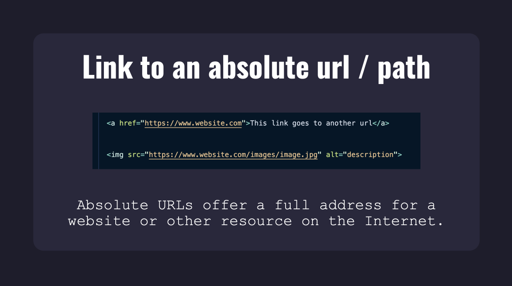

Week 4 & 5
Structuring content:
Header
The header is the introductory content at the top of the page. This is where you would find logos and or navs. You may also find it within sections and articles to introduce the content for headings, subheadings and authors.
Footer
The footer is the botom of the webpage. It will include links, copyright informationsm extra information about the company, careers and terms and services.
Main
The main element wraps around the main content of the page. It's used only once per page.
Section
Sections are used to wrap around related pieces of content. Each section typically have their own heading.
Article
This is self-contained content in a web page. It should be distributable and reusable because of it being independent.
Aside
The aside element is uusally seen as a sidebar on a website. It represents a portion of a document that is indirectly related to the documents main content.
A Nav Tag
The nav provides links either within the current webpage or to others.
Comments
The tag to make a comment is < ! -- ... --> A comment is used to explain your code, or insertion points at a later date. They are not viewed in the browser.
Generic elements
Generic elements are used to target content which is most often used later to manipulate styling with CSS (or later with Java script)
< div > are block elements used to group elements together
< span > are an inline container used to mark up a part of a text, or document.
Attributes
Attributes for HTML provide additional information about the HTML elements.
For example: href="" is an attribute
Linking to an absolute url/path
Absolute URLS or Absolutely Paths link websites to other resources on the internet

This is an Absoulte URL reference from class slides
Linking to a relative url/path
This is a relative url or relative path. It links the path to the current page because it assumes it has the the same protocol, subdomain and domain as the page its on.
This is an Relative URL reference from class slides
Linking to an element on the same page
Linking to an element on the same page is a little different, you need to create an anchor for the link. To do this you must give the appropriate element an id="Content" attribute.
This is the linking to an element reference from class slides
This was a helpful resource when linking.
Click the link to Read Here to read more about absolute paths, relative paths and linking to elements
Understanding nesting (parent/child relationship)
When learning HTML, the parent-child relationships of the elements is critical to good structure & code understanding. A parent is an element that is directly above and connected to an element in the document tree. An element that is directly contained by another element is said to be the child of that element.
Importance of indentation
When writing HTML it is important to properly format your code using good indentation. You can indent elements by moving them two spaces to the right. This will make your code more readable by other developers and shows the relationship between the child and parent HTML elements. (Wilkins, Jessica 2021)